第 8 章 时空数据可视化
library(ggplot2)
library(magrittr)
options(
ggplot2.continuous.colour = "viridis",
ggplot2.continuous.fill = "viridis"
)Robert J. Hijmans28 开发了 raster 包用于网格空间数据的读、写、操作、分析和建模，同时维护了空间数据分析的网站 https://www.rspatial.org
Edzer Pebesma29 和 Roger Bivand 等创建了 sp 包定义了空间数据类型和方法，提供了大量的空间数据操作方法，同时维护了空间数据对象 sp 的绘图网站 https://edzer.github.io/sp/，他们也一起合作写了新书 Spatial Data Science，提供了在线 网页版 书籍及其 源代码
Edzer Pebesma 后来开发了 sf 包重新定义了空间数据对象和操作方法，并维护了空间数据分析、建模和可视化网站 https://www.r-spatial.org/
课程案例学习
- 2018-Introduction to Geospatial Raster and Vector Data with R 空间数据分析课程
- Peter Ellis 新西兰大选和普查数据 More cartograms of New Zealand census data: district and city level
- 2017-Mapping oil production by country in R 石油产量在全球的分布
- 2017-How to highlight countries on a map 高亮地图上的国家
- 2017-Mapping With Sf: Part 3
- Data Visualization Shiny Apps 数据可视化核密度估计 In this app I identify crime hotspots using a bivariate density estimation strategy
- Association of Statisticians of American Religious Bodies (ASARB) viridis USA map
- 出租车行车轨迹数据
- Geospatial processing with Clickhouse-CARTO Blog
8.1 地图
我们先来看看中国及其周边，这个地图的缺陷就是中国南海及九段线没有标记，台湾和中国大陆不是一种颜色标记，地图数据来自 R 包的 maps 和 mapdata
library(maps)
library(mapdata)
east_asia <- map_data("worldHires",
region = c(
"Japan", "Taiwan", "China",
"North Korea", "South Korea"
)
)
ggplot(east_asia, aes(x = long, y = lat, group = group, fill = region)) +
geom_polygon(colour = "black") +
scale_fill_brewer(palette = "Set2")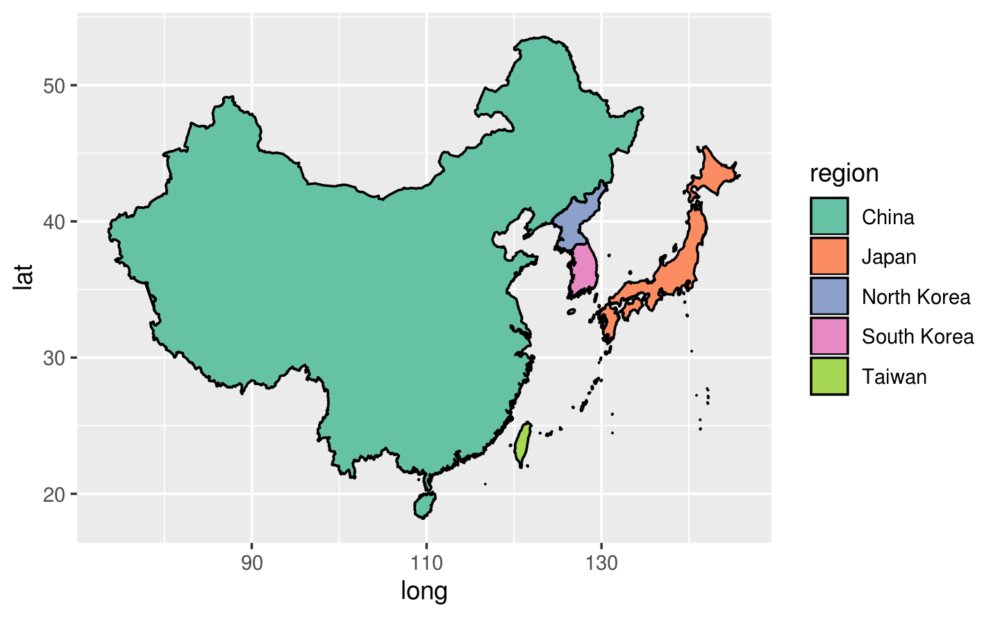
8.1.1 投影和观察方位
世界地图引发的 https://d.cosx.org/d/420808
worldmap <- map_data("world")
ggplot(worldmap, aes(long, lat, group = group)) +
geom_polygon() +
coord_map(
xlim = c(-120, 40), ylim = c(30, 90),
orientation = c(90, 0, 0)
)
# 默认mercator投影下的默认视角 c(90, 0, mean(range(x)))
ggplot(worldmap, aes(long, lat, group = group)) +
geom_polygon(aes(fill = region), show.legend = FALSE) +
coord_map(
xlim = c(-120, 40), ylim = c(30, 90)
)
# 相当于 (-120 + 40)/2 = -40
ggplot(worldmap, aes(long, lat, group = group)) +
geom_polygon(aes(fill = region), show.legend = FALSE) +
coord_map(
xlim = c(-120, 40), ylim = c(30, 90),
orientation = c(90, 0, -40)
)
# 从西经 120 度到东经 40度 不同的看待 range(x)
ggplot(worldmap, aes(long, lat, group = group)) +
geom_polygon(aes(fill = region), show.legend = FALSE) +
coord_map(
xlim = c(-120, 40), ylim = c(30, 90),
orientation = c(90, 0, -20)
)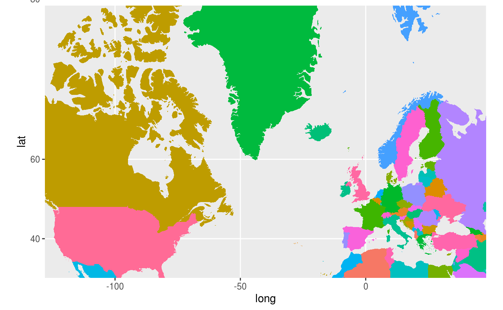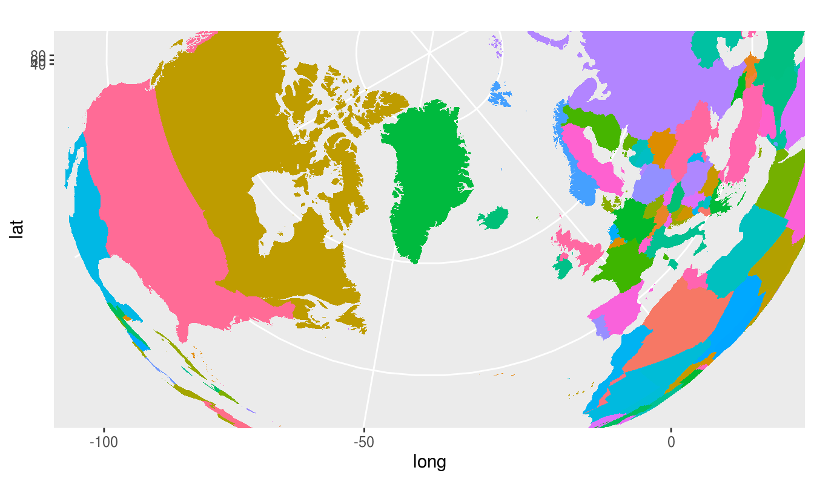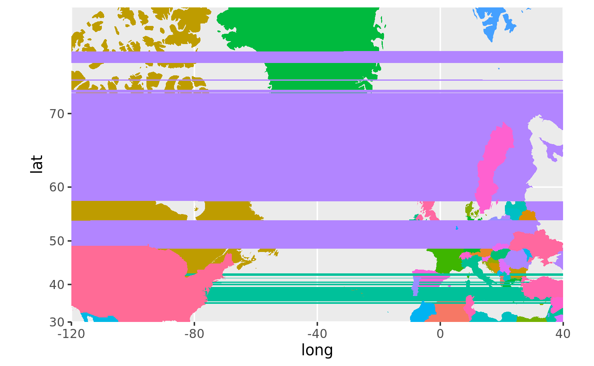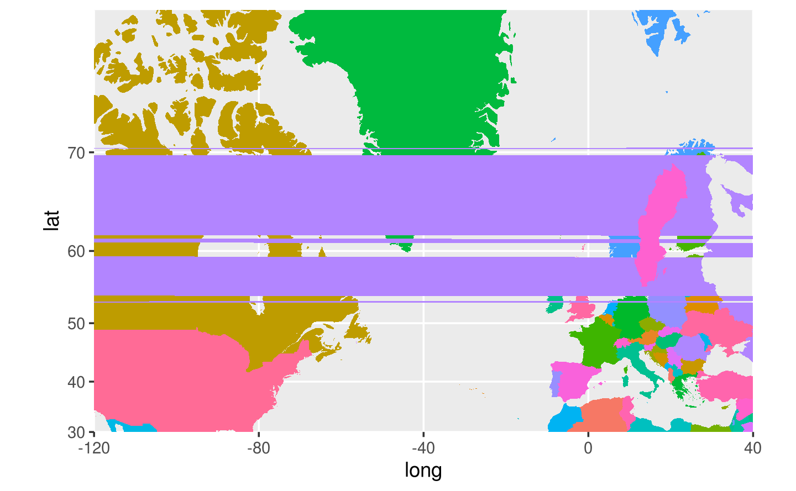
# 换观察角度
ggplot(worldmap, aes(long, lat, group = group)) +
geom_polygon(aes(fill = region), show.legend = FALSE) +
coord_map(
xlim = c(-120, 40), ylim = c(30, 90),
orientation = c(90, 0, 0)
)
# 换投影坐标系
ggplot(worldmap, aes(long, lat, group = group)) +
geom_polygon(aes(fill = region), show.legend = FALSE) +
coord_map("ortho",
xlim = c(-120, 40), ylim = c(30, 90)
)
# 二者皆换
ggplot(worldmap, aes(long, lat, group = group)) +
geom_polygon(aes(fill = region), show.legend = FALSE) +
coord_map("ortho",
xlim = c(-120, 40), ylim = c(30, 90),
orientation = c(90, 0, 0)
)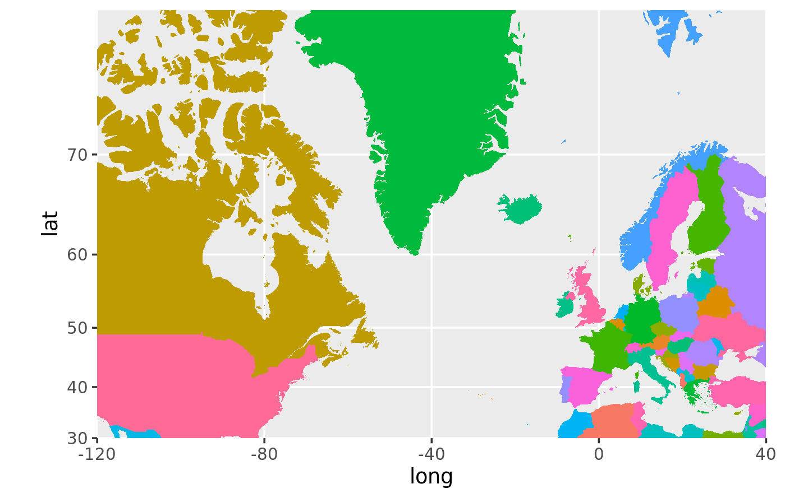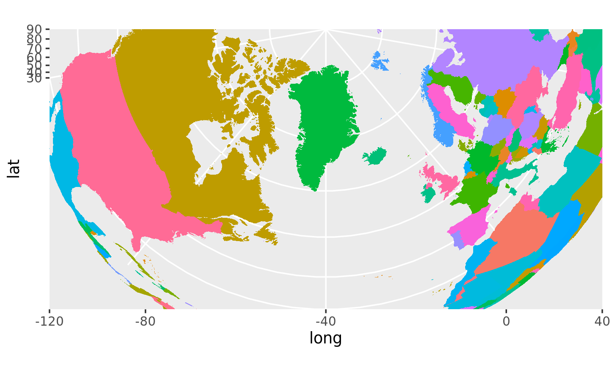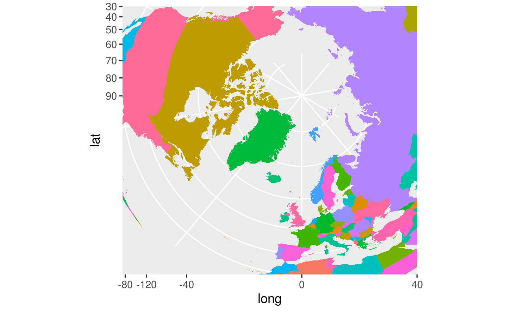
8.1.2 美国各州犯罪率
美国各州的犯罪率数据 USArrests
准备数据集
crimes <- data.frame(state = tolower(rownames(USArrests)), USArrests)
crimesm <- reshape2::melt(crimes, id = 1)
head(crimesm)
#> state variable value
#> 1 alabama Murder 13.2
#> 2 alaska Murder 10.0
#> 3 arizona Murder 8.1
#> 4 arkansas Murder 8.8
#> 5 california Murder 9.0
#> 6 colorado Murder 7.9添加地图数据
library(maps)
states_map <- map_data("state")
head(states_map)
#> long lat group order region subregion
#> 1 -87.46201 30.38968 1 1 alabama <NA>
#> 2 -87.48493 30.37249 1 2 alabama <NA>
#> 3 -87.52503 30.37249 1 3 alabama <NA>
#> 4 -87.53076 30.33239 1 4 alabama <NA>
#> 5 -87.57087 30.32665 1 5 alabama <NA>
#> 6 -87.58806 30.32665 1 6 alabama <NA>绘图
ggplot(crimes, aes(map_id = state)) +
geom_map(aes(fill = Murder), map = states_map) +
expand_limits(x = states_map$long, y = states_map$lat) +
coord_map()图 6.6: 1973年美国各州的犯罪率数据
ggplot(crimesm, aes(map_id = state)) +
geom_map(aes(fill = value), map = states_map) +
expand_limits(x = states_map$long, y = states_map$lat) +
facet_wrap(~variable)图 8.1: 四类犯罪在各州的分布
8.1.3 斐济地震带
比较 viridis 和 Spectral 两块调色板，如图 8.2 所示，可见 Spectral 的可识别性高些
dat <- as.data.frame(cbind(rep(1948 + seq(12), each = 12),
rep(seq(12), 12), AirPassengers))
colnames(dat) <- c("year", "month", "passengers")
ggplot(data = dat, aes(as.factor(year), as.factor(month))) +
geom_point(aes(colour = passengers), pch = 15, size = 8) +
scale_colour_distiller(palette = "Spectral") +
labs(x = "Year", y = "Month") +
theme_minimal()图 8.2: viridis 和 Spectral对比
再举栗子，图8.3是正负例对比，其中好在哪里呢？这张图要表达美国黄石国家公园的老忠实泉间歇喷发的时间规律，那么好的标准就是层次分明，以突出不同颜色之间的时间差异。这个差异，还要看起来不那么费眼睛，越一目了然越好。
library(gridExtra)
erupt <- ggplot(faithfuld, aes(waiting, eruptions, fill = density)) +
geom_raster() +
scale_x_continuous(NULL, expand = c(0, 0)) +
scale_y_continuous(NULL, expand = c(0, 0)) +
theme(legend.position = "none")
erupt1 <- erupt + scale_fill_gradientn(colours = gray.colors(7))
erupt2 <- erupt + scale_fill_distiller(palette = "Spectral")
erupt3 <- erupt + scale_fill_gradientn(colours = terrain.colors(7))
erupt4 <- erupt
grid.arrange(erupt1, erupt2, erupt3, erupt4, ncol = 2)图 8.3: 美国黄石国家公园的老忠实泉
此处调用 RColorBrewer 中 Spectral 调色板，它本来只有11中颜色，通过 scale_colour_distiller 却可以把它映射到连续型数值变量 mag 上，发散型调色板本身的对比性也可以起到很好的区分度，如图 8.4 所示
FijiMap <- map_data("worldHires", region = "Fiji")
ggplot(FijiMap, aes(x = long, y = lat)) +
geom_map(map = FijiMap, aes(map_id = region), size = .2) +
geom_point(data = quakes, aes(x = long, y = lat, colour = mag), pch = 16) +
xlim(160, 195) +
scale_colour_distiller(palette = "Spectral") +
scale_y_continuous(breaks = (-18:18) * 5) +
coord_map("ortho", orientation = c(-10, 180, 0)) +
labs(colour = "Magnitude", x = "Longitude", y = "Latitude") +
theme_minimal()图 8.4: 斐济地震带
此外， colormap 包提供更加丰富的调色板，通过 scale_color_colormap 支持 ggplot2 绘图风格
8.1.4 美国各城镇失业率
# 数据来源 http://datasets.flowingdata.com/unemployment09.csv
unemp <- read.csv(
file = "http://datasets.flowingdata.com/unemployment09.csv",
header = FALSE, stringsAsFactors = FALSE
)
names(unemp) <- c(
"id", "state_fips", "county_fips", "name", "year",
"?", "?", "?", "rate"
)
unemp$county <- tolower(gsub(" County, [A-Z]{2}", "", unemp$name))
unemp$state <- gsub("^.*([A-Z]{2}).*$", "\\1", unemp$name)
county_df <- map_data("county")
names(county_df) <- c("long", "lat", "group", "order", "state_name", "county")
county_df$state <- state.abb[match(county_df$state_name, tolower(state.name))]
county_df$state_name <- NULL
state_df <- map_data("state")
# Combine together
choropleth <- merge(county_df, unemp, by = c("state", "county"))
choropleth <- choropleth[order(choropleth$order), ]
choropleth$rate_d <- cut(choropleth$rate, breaks = c(seq(0, 10, by = 2), 35))
library(ggthemes)
ggplot(choropleth, aes(long, lat, group = group)) +
geom_polygon(aes(fill = rate_d), colour = alpha("white", 1 / 4), size = 0.2) +
geom_polygon(data = state_df, colour = "white", fill = NA) +
scale_fill_brewer(palette = "PuRd") +
labs(
fill = "ratio", title = "ratio of unemployment by county, 2009",
caption = "data source: http://datasets.flowingdata.com/unemployment09.csv"
) +
coord_map("polyconic") +
theme_map()
图 8.5: 2009年美国各城镇失业率
美国各地区失业率地图，配不同颜色， colormap 适合给静态图配色
8.2 空间数据对象
8.2.1 sp
空间数据对象，以类 sp 方式存储 (Pebesma and Bivand 2005)
library(sp)
crs = CRS("+init=epsg:28992")
data("meuse")
coordinates(meuse) <- ~x+y
proj4string(meuse) <- crs
class(meuse)
#> [1] "SpatialPointsDataFrame"
#> attr(,"package")
#> [1] "sp"
proj4string(meuse)
#> [1] "+init=epsg:28992 +proj=sterea +lat_0=52.15616055555555 +lon_0=5.38763888888889 +k=0.9999079 +x_0=155000 +y_0=463000 +ellps=bessel +towgs84=565.2369,50.0087,465.658,-0.406857,0.350733,-1.87035,4.0812 +units=m +no_defs"图 8.6: sp 对象
crs.longlat <- CRS("+init=epsg:4326")
meuse.longlat <- spTransform(meuse, crs.longlat)
plot(meuse.longlat, axes = TRUE)图 8.7: sp 对象
library(maptools)
#> Checking rgeos availability: TRUE
fname <- system.file("shapes/sids.shp", package = "maptools")
p4s <- CRS("+proj=longlat +datum=NAD27")
nc <- readShapePoly(fname, proj4string = p4s)
#> Warning: readShapePoly is deprecated; use rgdal::readOGR or sf::st_read
plot(nc, axes = TRUE, col = grey(1 - nc$SID79 / 57))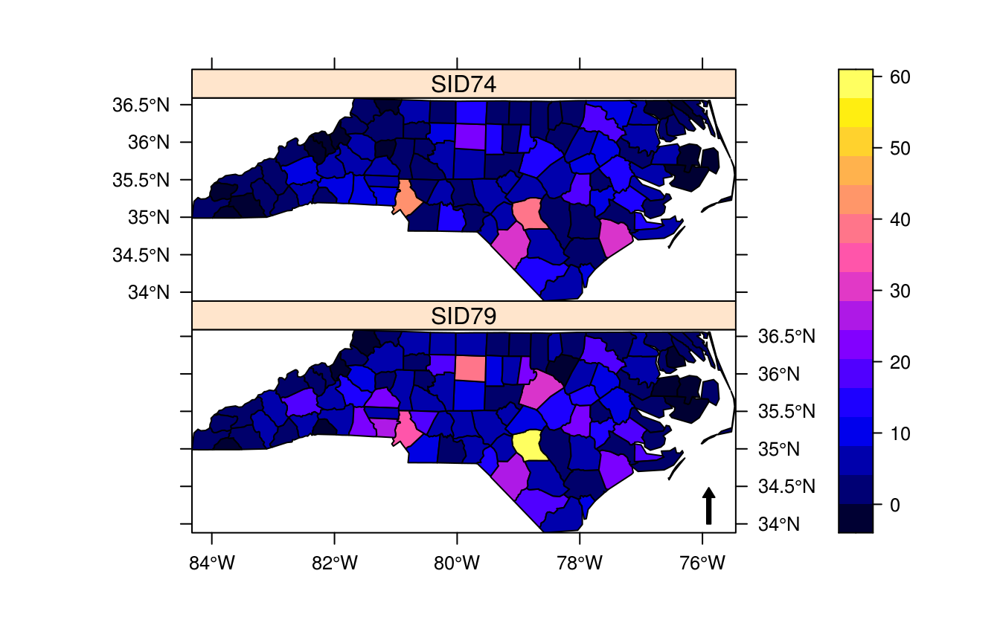
# Trellis maps
arrow <- list("SpatialPolygonsRescale",
layout.north.arrow(2),
offset = c(-76, 34), scale = 0.5, which = 2
)
spplot(nc, c("SID74", "SID79"),
as.table = TRUE,
scales = list(draw = T), sp.layout = arrow
)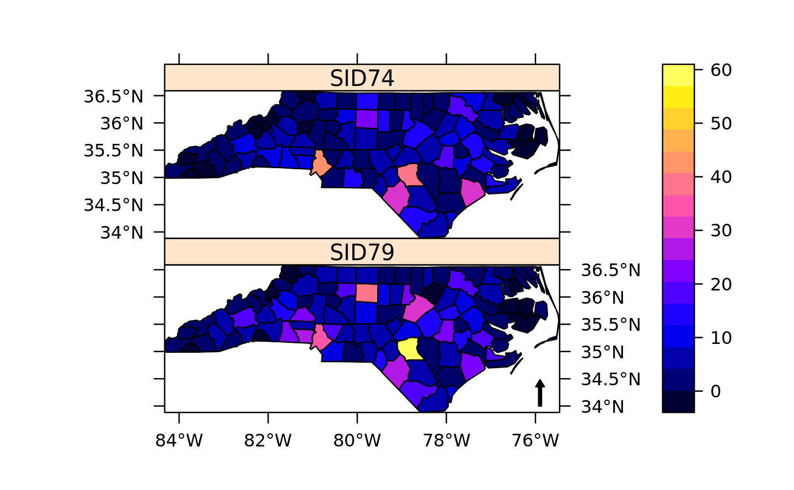
maptools 提供的 readShapePoly 函数去读取 shp 文件的方式已经过时，推荐使用 rgdal::readOGR 或者 sf::st_read 方式读取
8.2.2 raster
raster 包定义了获取和操作空间 raster 类型数据集的类和方法，rasterVis 补充加强了 raster 包在数据可视化和交互方面的功能。可视化是基于 lattice 的
raster 包的开发已经被作者 Robert J. Hijmans 迁移到 Github 上啦，官方文档 https://www.rspatial.org/
星号 * 标记的是 S3 方法
methods(plot)
#> [1] plot,ANY,ANY-method
#> [2] plot,color,ANY-method
#> [3] plot,Spatial,missing-method
#> [4] plot,SpatialGrid,missing-method
#> [5] plot,SpatialGridDataFrame,missing-method
#> [6] plot,SpatialLines,missing-method
#> [7] plot,SpatialMultiPoints,missing-method
#> [8] plot,SpatialPixels,missing-method
#> [9] plot,SpatialPixelsDataFrame,missing-method
#> [10] plot,SpatialPoints,missing-method
#> [11] plot,SpatialPolygons,missing-method
#> [12] plot.acf*
#> [13] plot.data.frame*
#> [14] plot.decomposed.ts*
#> [15] plot.default
#> [16] plot.dendrogram*
#> [17] plot.density*
#> [18] plot.ecdf
#> [19] plot.factor*
#> [20] plot.formula*
#> [21] plot.function
#> [22] plot.ggplot*
#> [23] plot.gtable*
#> [24] plot.hcl_palettes*
#> [25] plot.hclust*
#> [26] plot.histogram*
#> [27] plot.HoltWinters*
#> [28] plot.isoreg*
#> [29] plot.lm*
#> [30] plot.medpolish*
#> [31] plot.mlm*
#> [32] plot.ppr*
#> [33] plot.prcomp*
#> [34] plot.princomp*
#> [35] plot.profile.nls*
#> [36] plot.R6*
#> [37] plot.raster*
#> [38] plot.shingle*
#> [39] plot.spec*
#> [40] plot.stepfun
#> [41] plot.stl*
#> [42] plot.table*
#> [43] plot.trellis*
#> [44] plot.ts
#> [45] plot.tskernel*
#> [46] plot.TukeyHSD*
#> see '?methods' for accessing help and source code查看函数的定义
getAnywhere(plot.raster)
#> A single object matching 'plot.raster' was found
#> It was found in the following places
#> registered S3 method for plot from namespace graphics
#> namespace:graphics
#> with value
#>
#> function (x, y, xlim = c(0, ncol(x)), ylim = c(0, nrow(x)), xaxs = "i",
#> yaxs = "i", asp = 1, add = FALSE, ...)
#> {
#> if (!add) {
#> plot.new()
#> plot.window(xlim = xlim, ylim = ylim, asp = asp, xaxs = xaxs,
#> yaxs = yaxs)
#> }
#> rasterImage(x, 0, 0, ncol(x), nrow(x), ...)
#> }
#> <bytecode: 0x562774eee7e0>
#> <environment: namespace:graphics>rasterImage 函数来绘制图像，如果想知道 rasterImage 的内容可以继续看 getAnywhere(rasterImage)
getAnywhere(rasterImage)
#> A single object matching 'rasterImage' was found
#> It was found in the following places
#> package:graphics
#> namespace:graphics
#> with value
#>
#> function (image, xleft, ybottom, xright, ytop, angle = 0, interpolate = TRUE,
#> ...)
#> {
#> .External.graphics(C_raster, if (inherits(image, "nativeRaster")) image else as.raster(image),
#> as.double(xleft), as.double(ybottom), as.double(xright),
#> as.double(ytop), as.double(angle), as.logical(interpolate),
#> ...)
#> invisible()
#> }
#> <bytecode: 0x562778eb8420>
#> <environment: namespace:graphics>通过查看函数的帮助 ?rasterImage ，我们需要重点关注一下
参数 image 传递的 raster 对象
plot(c(100, 250), c(300, 450), type = "n", xlab = "", ylab = "")
image <- as.raster(matrix(0:1, ncol = 5, nrow = 3))
rasterImage(image, 100, 300, 150, 350, interpolate = FALSE)
rasterImage(image, 100, 400, 150, 450)
rasterImage(image, 200, 300, 200 + xinch(.5), 300 + yinch(.3),
interpolate = FALSE
)
rasterImage(image, 200, 400, 250, 450, angle = 15, interpolate = FALSE)图 6.14: raster 图像
library(raster)
#>
#> Attaching package: 'raster'
#> The following object is masked from 'package:magrittr':
#>
#> extract
meuse.test <- raster(x = system.file("external/test.grd", package="raster"))
class(meuse.test)
#> [1] "RasterLayer"
#> attr(,"package")
#> [1] "raster"图 6.17: raster 对象
Edzer Pebesma 开发了 stars 包
# https://resources.rstudio.com/rstudio-conf-2019/spatial-data-science-in-the-tidyverse
library(abind)
library(sf)
#> Linking to GEOS 3.7.1, GDAL 2.4.0, PROJ 5.2.0
library(stars)
x <- system.file("tif/L7_ETMs.tif", package = "stars") %>%
read_stars()
ggplot() +
geom_stars(data = x) +
coord_equal() +
facet_wrap(~band) +
theme_void() +
scale_fill_viridis_c() +
scale_x_discrete(expand = c(0, 0)) +
scale_y_discrete(expand = c(0, 0))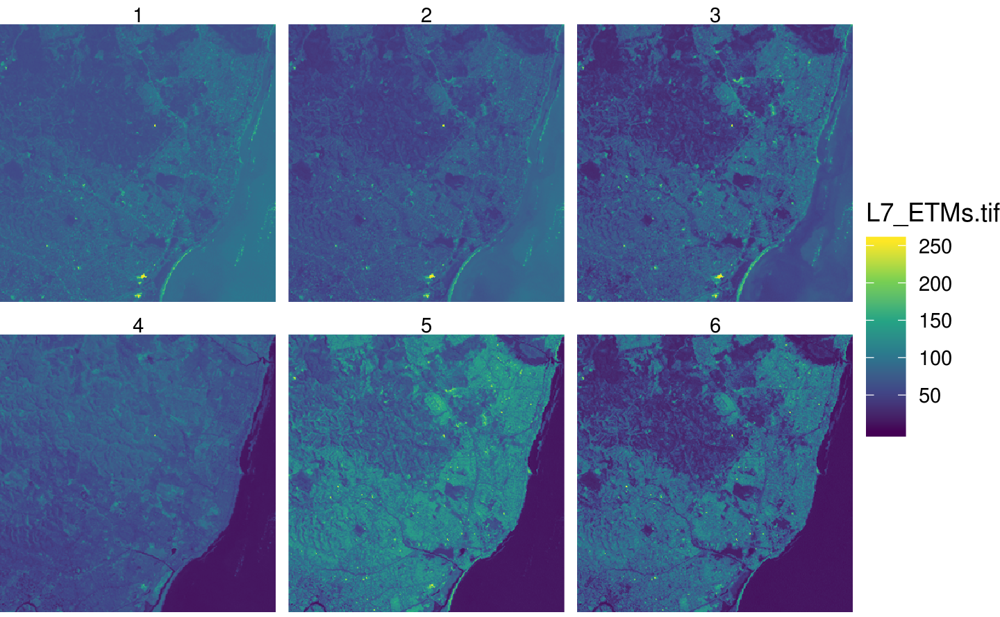
参考文献
Pebesma, Edzer J., and Roger S. Bivand. 2005. “Classes and Methods for Spatial Data in R.” R News 5 (2): 9–13. https://cran.r-project.org/doc/Rnews/Rnews_2005-2.pdf.